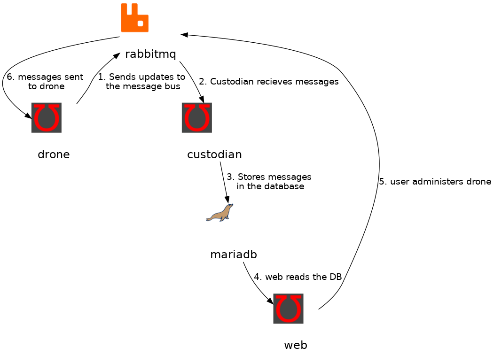

Introduction

These are the Upsilon docs. They are available at docs.upsilonproject.io and the upsilon-docs project on GitHub. You can also download a PDF if that’s what you’re into.
To learn more about the Upsilon project, please visit http://www.upsilonproject.io.
Help improve this documentation!
This documentation is written in a very simple human-readable language called AsciiDoc. This means basically anyone can make changes and improvements by just visiting the GitHub repository for the documentation raise a GitHub pull request against your own feature branch.
If you don’t know how to do that, please just tell us how to improve documentation by raising an issue ticket against the docs and we’ll take it from there!
Services & Introduction
Architecture Overview
-
Drone - The drone is the main worker, it run service checks and collects results.
-
Web - The web interface provides a graphical dashboards, and administrator command and control.
-
MobileWeb - A native Android application with shortcuts for the web application, as as the ability to recieve notifications from reactors.
-
Reactor - Alerting and notifications.
-
Custodian - Provides an API on top of the database.

Drone
upsilon-drone runs the service checks.
Configuration
Autoconfiguration
upsilon-drone will look for the following environment variables on startup;
| Environment Variable | Example | Description |
|---|---|---|
|
test.example.com |
The unique identifier for the node |
|
amqp.example.com |
The address of the AMQP Server |
config.xml
upsilon-drone can be manually configured by a simple config.xml file, usually installed at
/etc/upsilon-drone/config.xml on most platforms. This is necessary if you
don’t want to use central configuration management for some reason.
Web
The web interface.
Reactor
The reactor "reacts" to things in upsilon. It should provide alerting one day.
Custodian
TODO.
Installation
This section could be called installation options, as it presents a couple of different options to install Upsilon. However, it’s probably a bit more correct to think of these as "deployment environments" so that is the terminology used by this documentation.
Deployment Environments
Here are a set of common deployment environments. It’s important to know that you can change, scale and upgrade Upsilon later on as well - the architecture is such that if you start off in a single virtual machine but later decide to go "full on with containers" (!) you can do that without too much hassle. See the upgrading section for more information.
-
Upsilon all-in-one on a CentOS Virtual Machine (~20 minutes)
-
Upsilon on OpenShift (~5 minutes)
-
Upsilon in docker Containers (~10 minutes)
-
Upsilon with Ansible (advanced installation)
-
Upsilon your way… (advanced installation)
"All in one" CentOS Virtual Machine
Upsilon can quite happily exist all in a single virtual machine for most deployments. You can scale out and change fairly easily after that too, but this sort of configuration is normally best for playing around, testing, kicking the tyres and similar.
This article assumes you know how to install CentOS 7 in a virtual machine on your favourite hypervisor, or cloud. Upsilon doesn’t really care where it runs.
Virtual Machine requirements
-
Hypervisor: any hypervisor/virtualisation that runs CentOS 7 Linux.
-
RAM: 4 Gb
-
CPU: 2x virtual CPUs
-
NIC: 1x public network interface
-
OS: CentOS 7, http://centos.org
-
Firewall: see below…
| Protocol & Port | Source | Reason |
|---|---|---|
TCP Port 22 |
inbound |
SSH inbound traffic - to connect to the VM for administration |
TCP Port 80 |
inbound |
HTTP inbound traffic - to access the web interface (upsilon-web) |
TCP Port 4000 |
inbound |
upsilon-drone inbound traffic - REST API port |
TCP (Various port) |
outbound |
What do you want upsilon to connect to? |
Install packages and enable dependant services
Become root on your virtual machine, lets begin :)
root@host:
Add the upsilon yum repository, and the EPEL repository for CentOS (Extra Packages for Enterprise Linux);
root@host: cd /etc/yum.repos.d/ root@host: curl -O http://repos.upsilonproject.io/upsilon-rpm-el7/upsilon-rpm-el7.repo root@host: rpm -U https://dl.fedoraproject.org/pub/epel/epel-release-latest-7.noarch.rpm
For RHEL, you need to enable the following repositories;
root@host: subscription-manager --enable 'rhel-7-server-rpms' root@host: subscription-manager --enable 'rhel-7-server-extras-rpms' root@host: subscription-manager --enable 'rhel-7-server-optional-rpms'
Lets install everything! Dependencies will be installed automatically.
root@host: yum install centos-release-scl root@host: yum install upsilon-drone upsilon-web upsilon-database-sql rabbitmq-server mariadb-server httpd mariadb-server php php-pdo php-mysql
Lets start the webserver (httpd), the database server (mariadb), the
message server (rabbitmq) and make sure they restart on reboot (using
enable);
root@host: systemctl enable httpd mariadb rabbitmq-server root@host: systemctl start httpd mariadb rabbitmq-server
Should be no problems so far. Lets open up the port for the web interface if it’s not already open;
root@host: firewall-cmd --add-service http --permanent
Create a "upsilon" DNS record
Many of the upsilon services rely on a DNS record called "upsilon" to find the messaging server, and perform auto-configuration.
Because this a all in one virtual machine, we can simply edit the hosts file. Open /etc/hosts and add "upsilon" as a name for localhost;
127.0.0.1 localhost localhost.localdomain localhost4 localhost4.localdomain4 upsilon ::1 localhost localhost.localdomain localhost6 localhost6.localdomain6 upsilon
You should be able to ping upsilon if you have done this correctly.
[root@upsilon-allinone upsilon-drone]# ping upsilon PING localhost (127.0.0.1) 56(84) bytes of data. 64 bytes from localhost (127.0.0.1): icmp_seq=1 ttl=64 time=0.023 ms 64 bytes from localhost (127.0.0.1): icmp_seq=2 ttl=64 time=0.048 ms ...
Get the web interface installed
Now try and visit the web interface;
There isn’t anything that exciting in the web interface by default, so lets setup a drone so we can start monitoring stuff.
Start using the web interface
In the web interface, go to Nodes >> List, you should see the custodian and drone show up. If so, you’re ready to get going!
Upsilon on OpenShift
Upsilon can be deployed quite easily on top of OpenShift 3 - all it’s services dockerized/containerized. You can scale-out of the OpenShift environment and deploy upsilon-drone and other services outside too.
This article assumes you have a OpenShift 3 environment up and running, and have a fairly reasonable quota.

Upload the Upsilon application template to OpenShift
There is a pre-built Upsilon application template for OpenShift, stored in a GitHub repository called upsilon-on-openshift.
On your local workstation, clone this repository:
user@host: mkdir upsilon-sandbox && cd upsilon-sandbox user@host: git clone https://github.com/upsilonproject/upsilon-on-openshift.git user@host: cd upsilon-on-openshift
Login to OpenShift using the command line tool and upload the application template.
user@host: oc new-project upsilon-on-openshift user@host: oc status In project Upsilon on OpenShift (upsilon-on-openshift) on server https://openshift.example.com:8443 You have no services, deployment configs, or build configs. Run 'oc new-app' to create an application. user@host: oc create -f upsilon-on-openshift.yaml
The application template should complete successfully, and you should be able to browse and find Upsilon in the OpenShift catalog;


You can change some of the deployment options before starting the deployment, but the defaults are fine.

When the pods deploy successfully, continue to the Setup section of this manual.
Upsilon on Docker
Drone on Docker
docker create --name upsilon-drone -p 4000:4000 upsilonproject/drone -EUPSILON_IDENTIFIER=myDroneName
Upsilon with Ansible
Note: These ansible scripts are in very early development, they help, but don’t install a full environment. Only useful if you know Upsilon pretty well right now. If you just want to play around with Upsilon for testing, don’t use this method.
The GitHub repository is stored and maintained here with documentation;
Upsilon your way…
Upsilon was designed to not be too presecriptive to the architectire it runs on, as everyone has different environments and different requirements.
Here are the high level requirements for running Upsilon
-
DNS record "upsilon" that points to the AMQP server.
-
Linux environment is largely expected, although parts of Upsilon might run on windows or MacOS, this isn’t tested really at all at the moment. CentOS is used by the project developers, hence CentOS packages are available. Debian based or other distributions are likely to work fine though.
Here are some other deployment configurations that are known to work;
-
Using 1 uspilon serivce to 1 docker container, then deploying on OpenShift, or docker on it’s own.
-
Deploying every service inside a virtual machine.
Setup
This section is about how to setup Upsilon once it is installed.
Database
When MySQL is installed, it will not be setup automatically with the upsilon database. We need to set that up manually using a couple of scripts.
If you are running on a Linux machine (without containers);
Make sure the upsilon-database-sql package is installed.
user@host: yum install upsilon-database-sql
Go into the database setup directory that is created for you;
root@host: cd /usr/share/upsilon-database-sql/mysql/
There is a "create-database" script in this directory, but that requires a few settings that we have not setup. Instead lets just run the following commands to import the database;
root@host: mysql -u root -e 'CREATE DATABASE upsilon' root@host: mysql -u root upsilon < sql/schema.sql root@host: mysql -u root upsilon < sql/initialData.sql
If you are running inside a Linux container (like OpenShift);
The upsilon-web container image contains the database installer. You just need to launch a shell inside this container to run the initial database setup.
Create the database
Create the initial database using the create-database script.
user@host: cd /usr/share/upsilon-database-sql/mysql/ user@host: ./create-database
Web
Launching the installer
upsilon-web will automatically launch the web installer if it cannot find a config.php file. This happens when upsilon-web is initially installed (or it’s config file has been deleted).
This is what the upsilon-web installer looks like;

System tests
Various common tests will run to check that upsilon-web can be installed
correctly. Everything should be green with a PASS in order to continue.
Most of these issues require additional packages to be installed, for example
the pdoAvailable check can be fixed by doing yum install php-pdo on some
systems.
Generate config.php
Database
When all the system tests have passed, you need to then configure the database connection.
| Field | Example | Description |
|---|---|---|
DSN |
|
See http://php.net/manual/en/pdo.construct.php for more information. |
Database user |
|
The username of the user that the web interface will use to connect to the database. |
Database pass |
|
The password for your database username. |
|
Note
|
In some environments like OpenShift the username and password can be automatically completed for you as shown below. In other cases, you must specify the username and password of an existing MySQL user, or use the root user. |

Common Issues
-
asdf
First administrator
The default first admin is admin, but you can change that here and set a
password that you like as well. Additional administrators can be configured
later too.

Drone
upsilon-drone is the workhorse of Upsilon, and you need at least one drone to get anything done.
Here’s how the architecture works;
The upsilon-drone service ships with a "sample" configuration file that is ready to use in this simple deployment;
root@host: cd /etc/upsilon-drone/ root@host: cp config.xml.sample config.xml
We should now start the drone, which should pick up the configuration file
root@host: service upsilon-drone restart
Lets try and ping it;
root@host: upsilon-ping Waiting 3 seconds for responses to pings. +--------------------------------------+--------------------+------------+ | Identifier | Version | Type | +--------------------------------------+--------------------+------------+ | 5b4e1ec4-ab8d-4f03-88b3-0746f6e5922e | 2.2.0-0-1514431787 | amqp, rest | +--------------------------------------+--------------------+------------+
Looks good. However, we need a custodian to write results to a database now…
Custodian
user@root: yum install upsilon-custodian -y
upsilon-custodian should work without any additional configuration, so lets start it.
user@root: service upsilon-custodian restart
Lets do another ping to check it came up;
root@host: upsilon-ping Waiting 3 seconds for responses to pings. +--------------------------------------+--------------------+------------+ | Identifier | Version | Type | +--------------------------------------+--------------------+------------+ | upsilon-custodian | development | db, amqp | | 5b4e1ec4-ab8d-4f03-88b3-0746f6e5922e | 2.2.0-0-1514431787 | amqp, rest | +--------------------------------------+--------------------+------------+
Integration
Grafana
Grafana can quite happily read from the Upsilon MySQL database and show lots of information. The easiest way to probably do this is create a couple of SQL Views that make building Grafana queries a little easier.
Services Dashboard

SQL View
create view `grafana_services` as select id, identifier, lastUpdated, node, case karma when 'GOOD' THEN 3 WHEN 'BAD' THEN 0 WHEN 'UNKNOWN' THEN 1 WHEN 'OLD' THEN 2 ELSE '?' END karma, karma AS karmaDescription FROM services;

Grafana Table view
Use normal settings for table column headers.
Here is how you setup the karma column highlighting.

Authentication
Really sorry, but Upsilon does not really have any integration into authentication providers at the moment :(

Upgrading
Upsilon is designed to be N-1 compatible for updates, with automatic upgrades of database schema and similar whenever possible.
Appendix
Please check out the website for further links, and to contact the community.